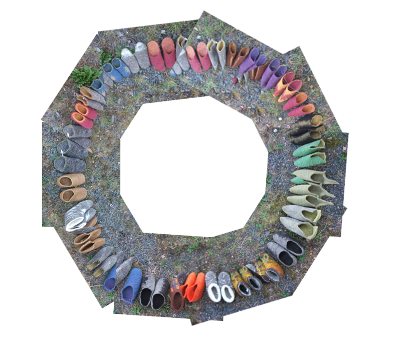
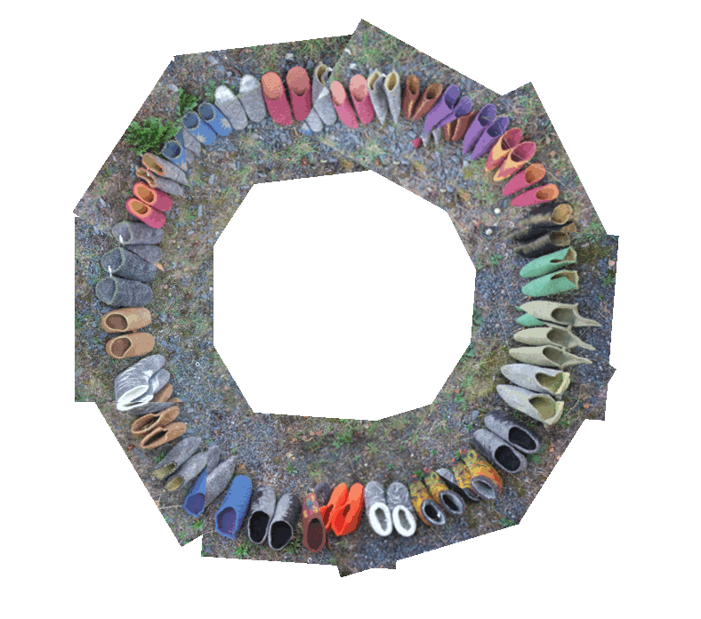

<div class="home">

  <!--div>Chaussons en laine locale feutrée, un travail artisanal, des pièces uniques</div>
  
  

  <p><a href="contact">Contact</a></p-->
  <h1 class="page-heading">Bienvenue</h1>
  
  

  <!--p class="rss-subscribe">subscribe <a href="{{ "/feed.xml" | prepend: site.baseurl }}">via RSS</a></p-->

</div>
